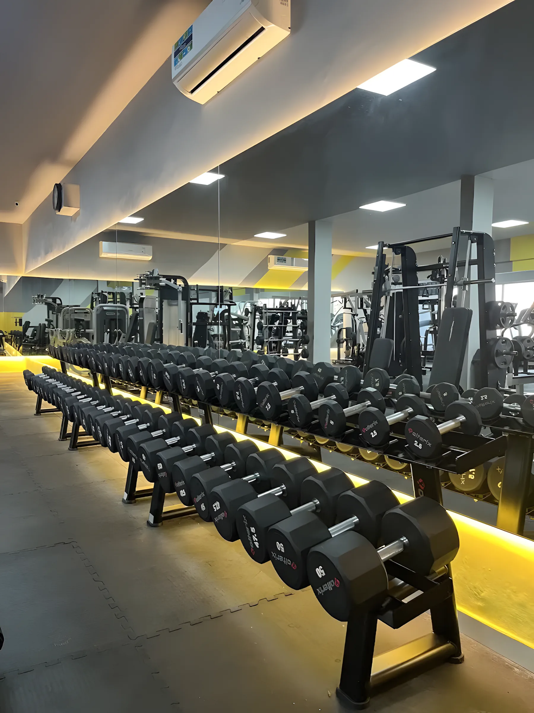
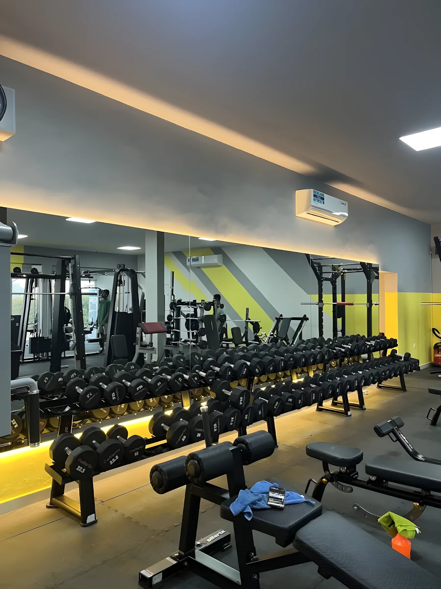
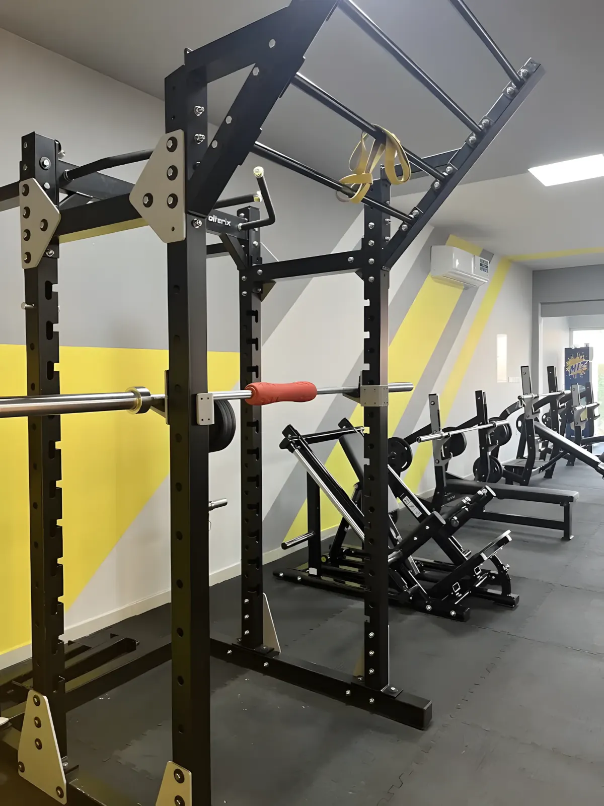
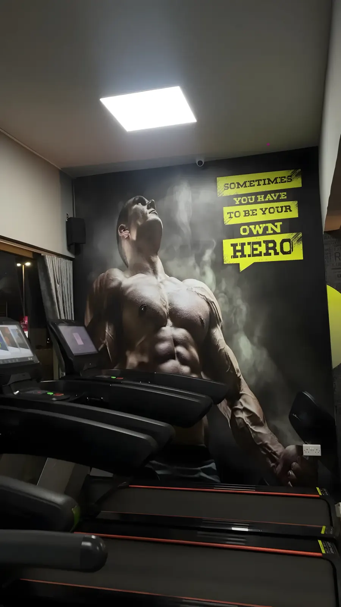
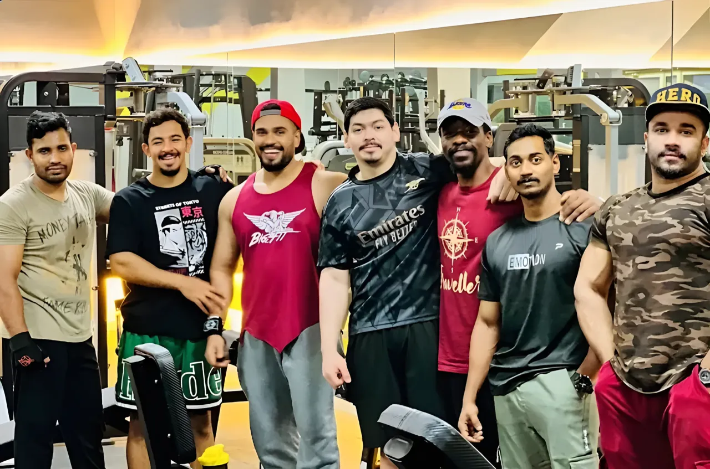
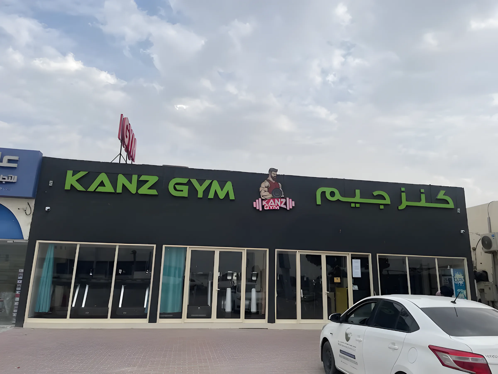

KanzGym
كنز جيمWeights, machines and cardio on one big floor in Al Butain, Umm Al Quwain. Listed hours: every day from 5 in the morning until 2 at night.

One long, bright floor in Al Butain. A full wall of dumbbells under yellow light, rows of plate-loaded machines, racks, cables, and a line of treadmills by the windows.

What's on the floor
Seven areas, all in one room. Open any of them to see what's there, or take the full tour.
01Dumbbell wallTwo long rows of round rubber dumbbells along the mirror, lit from underneath.
- Two-tier racks along a full mirror wall
- Round rubber dumbbells, light to heavy
- Adjustable benches right in front

02Plate-loaded machinesPresses, rows and pulldowns you load with plates. They feel like free weights, on a fixed path.
- Chest and incline press
- Lat pulldown and high row
- Seated row
- Plates kept right by the machines

03Racks & barbellsPower racks with pull-up bars, a Smith machine and a full rack of straight and EZ bars.
- Power racks for squats and presses
- Smith machine
- Straight and EZ-curl barbells
- Flat and incline bench press stations

04Leg dayA 45-degree leg press and a hack squat, side by side on rubber flooring.
- 45-degree leg press
- Hack squat
- Racks and barbells a few steps away

05Cables & machinesA cable crossover station and pin-loaded machines for slow, controlled work.
- Cable crossover station
- Pin-loaded machines
- Good for beginners and for finishing a session

06CardioTreadmills facing the windows, a stair climber and recumbent bikes.
- Treadmills along the windows
- Stair climber
- Recumbent bikes
- Air-conditioned floor

07Open floorRubber-tiled space with medicine balls and a mirror for warm-ups, stretching and core.
- Medicine balls
- Mirror wall
- Open rubber floor

Walk the floor
Drag or swipe. Every photo here was taken inside Kanz Gym.
Pulldown & row
Power rack

Chest press
Leg press & hack squat

Barbells
Cable crossover
Treadmills

Bikes
Open floor
5amto 2am
Every day · as listed online
Before work, after a late shift, or at midnight when it's finally cool outside. The doors are open 21 hours a day.
Hours as listed online. Message us to check today's hours before you come.
Ask about membershipRating
4.5/ 5
Average from 33 ratings, as shown on Kanz Gym's magicpin listing.
Never give up. Keep going.
Painted on our wall, in case you need it at 1am.

Find us
Al Butain (Al Bootain), Umm Al Quwain
UAQ City Centre area · plus code GGMQ+HCF
Look for the black front with the green KANZ GYM · كنز جيم sign and the row of glass doors.
Every day · 5:00 am – 2:00 am
Hours as listed online. Message us to check today's hours.
